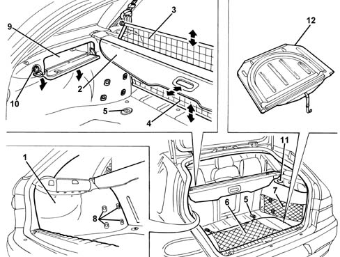
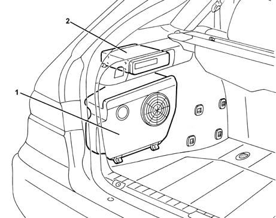

7040B luggage compartment and load platform trims
- Path
- Descriptions > 70 FITTINGS > 7040 BODYSHELL INTERIOR TRIMS AND FITTINGS > 7040B luggage compartment and load platform trims
- Kind
- system description
- Applies to
- all engines; all production periods
- Interactive page
- https://sloeber94.github.io/elrnDB-a156/en/#/3232983
Applies to: all engines; all production periods; only with equipment: Station Wagon
SPECIFICATIONS
The boot is fully lined with sound-reducing materials offering optimum contact and grip for transported objects. The boot also comprises several features for ensuring the comfortable and safe stowage of transported materials. Using the rear seat folding options, the space necessary for transport can be modulated in various ways, and the load can also be tied down. In detail, there are the following components:
- Winding horizontal curtain for covering the luggage compartment. The winder is contained in a removable crossmember positioned just behind the rear head restraints.
- Winding vertical anti-intrusion mesh. It is used for transporting animals and it separates the passenger compartment from the luggage compartment. The winder is contained in the crossmember next to that for the winding curtain.
- Lower anti-intrusion mesh. This is the same as the upper mesh, and can be lowered with seat squabs tilted so that the passenger compartment is still separate from the luggage compartment.
- Anchor hooks on the floor.
- Luggage fastening net on floor. This is an elastic net which can be tied to the anchoring hooks so as to tie down objects resting on the floor.
- Luggage retaining net. The luggage compartment has several specific hooks for anchoring this elastic net. The net can be positioned both along the side and transversally behind the squab.
- Container boxes on side brackets. The side brackets, which act as a support and guide for the winding curtain, are fitted with useful boxes with flaps.
The left side bracket contains a power socket, supplied when the ignition is on, protected by a spring clip cover. On the right side bracket there is a courtesy light for lighting up the luggage compartment.
The floor contains the compartment for the small spare wheel. This compartment is sound-proofed and covered with a special fitted flap. This flap can be folded over to offer a water-repellent containing surface for transporting dirty or wet objects, so that the interior trim is not dirtied.

1, Trim 2, Winding curtain for covering luggage compartment 3, Anti-intrusion mesh 4, Lower anti-intrusion mesh 5, Anchoring hook on floor 6, Luggage retaining net on floor 7, Luggage retaining net 8, Hooks for anchoring net 9, Box on side bracket 10, Power socket 11, Courtesy light 12, Cover flap
Cars fitted with Hi-Fi audio system have a high-performance subwoofer loudspeaker housed in the left side of the luggage compartment. The left bracket also contains the housing for the Multi CD option.

1 Subwoofer loudspeaker 2 Multi CD system